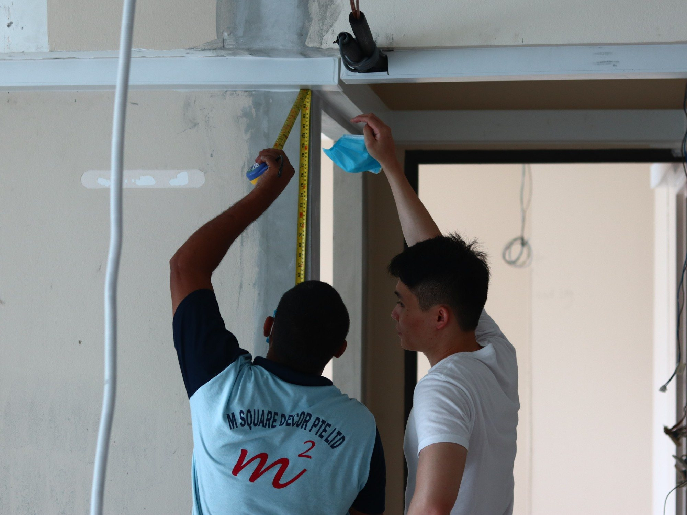
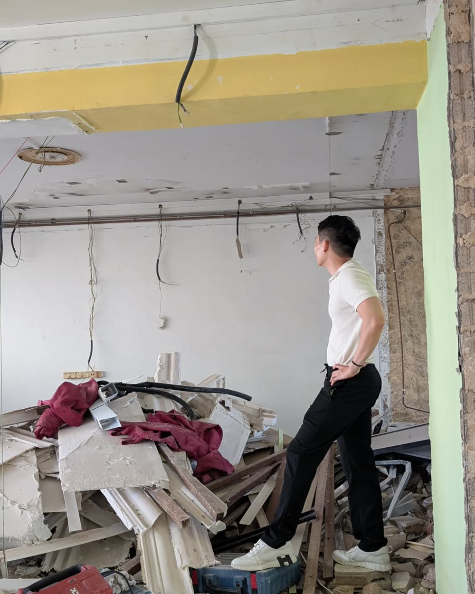

BlogQuotes and contracts
How to read a renovation quotation in Singapore, line by line

Key points
- A good quotation is itemised. Every line has a description, a quantity, a unit and a price.
- The lowest total is often the one with the most left out.
- Compare quotations scope against scope, never total against total.
- Get the payment schedule, the warranty and the rules for changes in writing.
A homeowner who understands a quotation can’t be oversold. I would rather teach than pitch, so this is how I read a renovation quotation myself. I trained as a mechanical engineer before I became a designer, and I still read a quote the way I read a drawing. What is this line? How is it measured? What happens to the home if it is missing?
Start with the structure, not the total
Most quotations in Singapore are grouped by trade: hacking and demolition, masonry and tiling, plumbing, electrical, ceiling and partition works, carpentry, painting, then closing items such as cleaning and haulage.
Before you look at a single price, check that each line gives you four things: a description, a quantity, a unit and a rate. “Kitchen cabinets, lump sum” tells you nothing. “Kitchen base cabinet in plywood with laminate finish, 12 foot run, soft-close hinges” tells you what you are buying, and it lets you compare one firm with another.
Know the units
- Foot run (often written “ft run” or “pfr”). Carpentry is usually priced by length. Ask what height and depth the rate assumes, and whether drawers, pull-outs and internal fittings are included.
- Square foot. Used for tiling, flooring, painting and false ceilings. Ask whether wastage is included and how the area was measured.
- Per point or per number. Used for electrical points, lights and plumbing points. Count them against your layout.
- Lump sum. Fine for small items. A warning sign for large ones.

Look for what is not there
When two quotations are far apart, the gap is usually in what one of them has left out. These are the items I check for first:
- Haulage and debris disposal after hacking
- Protection for your floors, the lift and the common corridor
- Waterproofing in bathrooms and other wet areas
- Electrical points and rewiring, because the price may assume your existing points stay
- Plumbing for a sink or appliance that is moving
- Painting, and touch-ups after the carpentry goes in
- Installing the sink, tap, hob, hood and bathroom accessories
- Permit applications, and what any “permit fee” line really covers
- Cleaning before handover
- GST
A quotation is not wrong for leaving these out. It becomes a problem when you assumed they were in.
Compare scope against scope
Put two or three quotations side by side and go trade by trade. If one carpentry figure is much lower, check the foot run, the board material and the internal fittings before you decide it is cheaper. Where you can, ask every firm to quote on the same drawing. Then you are comparing prices, not guesses.
The lowest total is often the one with the most left out.
Read the terms as carefully as the prices
- Payment schedule. Payments should follow stages of work. Firms accredited by CaseTrust must cap the initial deposit at 20 per cent of the total cost and use a standard contract with progressive payments, according to CASE.
- Changes. Ask how a change is priced and approved. Insist on a written variation order before the work is done, not after.
- Timeline. Look for a start date, the key stages and a handover date, and ask what happens if they slip.
- Warranty. CaseTrust-accredited firms must give a 12-month workmanship warranty. Whoever you hire, get the warranty in writing.
- Who does the work. For an HDB flat, you may only engage contractors listed in HDB’s Directory of Renovation Contractors.
Keep a buffer
Older flats hide surprises behind tiles and false ceilings. Many renovation guides suggest setting aside 10 to 15 per cent on top of the quoted sum. Decide before you sign what you would drop first if you need that money.
Five questions to ask before you sign
- Which items in my brief are not in this quotation?
- What material, brand and thickness does each carpentry line assume?
- What would make this price go up after we start?
- Who is on site each day, and who do I call?
- Can I see the payment schedule and the warranty in writing?
If you can explain your own quotation to a friend, you are ready to sign it. If you can’t, keep asking until you can. And if you are still at the planning stage, my free HOME guide walks through the four things to settle before any quotation is written.